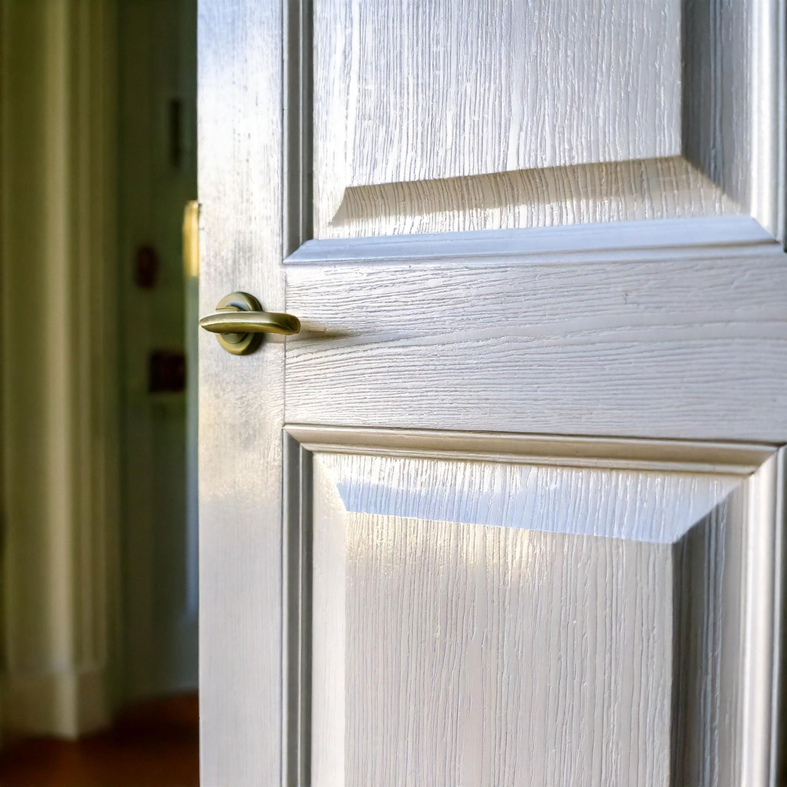
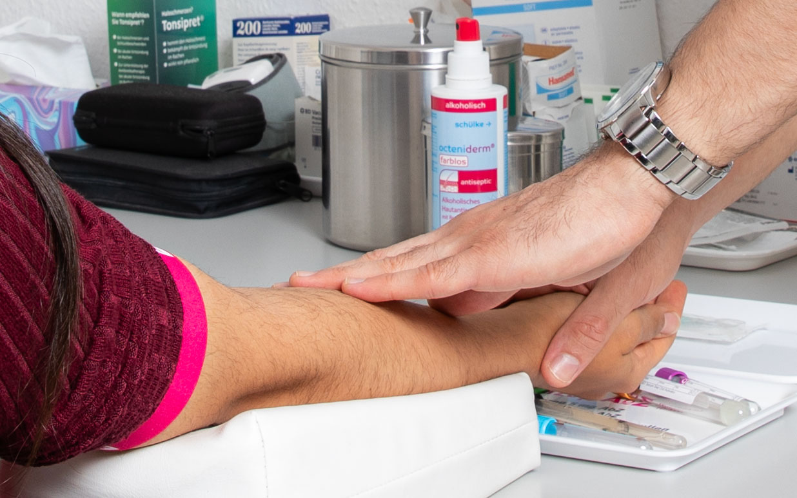

Hausbesuche
Für Patienten, die nicht in die Praxis kommen können, bieten
wir Hausbesuche an, um eine kontinuierliche Betreuung zu
gewährleisten.

Akupunktur
Eine sanfte Methode der traditionellen chinesischen Medizin,
die wir als ergänzende Therapieform einsetzen.
Naturheilverfahren
Natürliche Therapien, die den Körper auf sanfte Weise
unterstützen und die Schulmedizin ergänzen.
Ernährungsmedizin
Eine gesunde Ernährung ist entscheidend für Ihr
Wohlbefinden. Wir beraten Sie individuell und entwickeln
gemeinsam nachhaltige Ernährungsstrategien.
Reisemedizin
Planen Sie eine Reise? Wir bieten eine umfassende Beratung
und die notwendigen Impfungen, damit Sie gesund und
geschützt unterwegs sind.
Impfungen
Schutzimpfungen für Kinder und Erwachsene, um Ihre
Gesundheit und die Ihrer Familie zu bewahren.